Connecting to z/OS from the Jump Server
Once your jump server is provisioned and in Ready state, open it and connect to your z/OS instance using the pre-installed tools.
The jump server comes with the following tools pre-installed:
- Cisco Secure Client
- IBM Personal Communications (PCOMM)
- VS Code
- GitHub Desktop
- Firefox
1. Open the Jump Server
- Find your jump server in My Requests and click the Open this reservation button on its tile.

- Click the twisty dropdown next to your request to show the connection details.

- From the details page, click on the guacamole remote desktop link. This opens the Windows desktop environment in your browser.

- This will open a new tab and start bringing up the desktop environment. It will take a second to login and open the page. Nothing needs to be done, just let it connect through. You are ready to move on when you see the desktop, icons, and toolbar like this:

2. Connect to z/OS
2.1 Connect to Cisco Secure Client
- Double click on the Cisco Secure Client icon on the desktop.
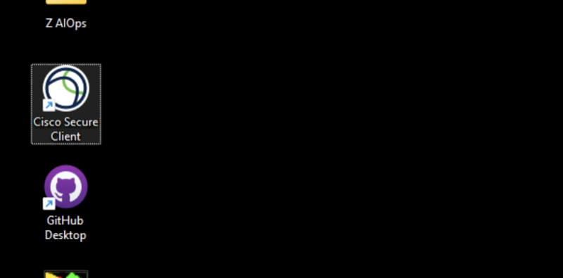
- Enter the hostname
asa003b.centers.ihost.comand click the 'Connect' button.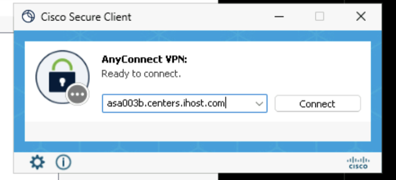
- You will be prompted for a Username and Password. Enter the VPN credentials included with your z/OS Reservation Details on TechZone.
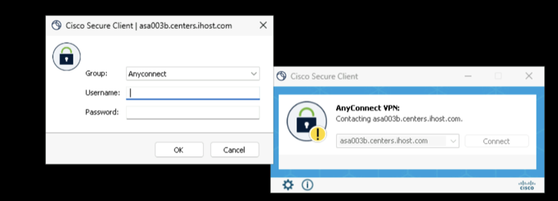
⚠️ If you are an IBMer, VPN credentials must be requested by opening a Support Ticket. This is only required to test the jump server, otherwise your regular IBM corporate VPN will suffice and the jump server is not required.
- For more information about how to get connected to the VPN, see TechZone's documentation here if you are having trouble.
2.2 Configure PCOMM Session
- Click on the IBM Personal Communication icon on the desktop.
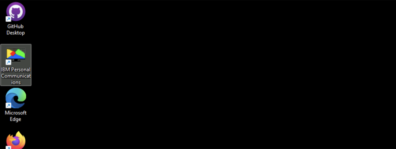
- Click on the New Session button.
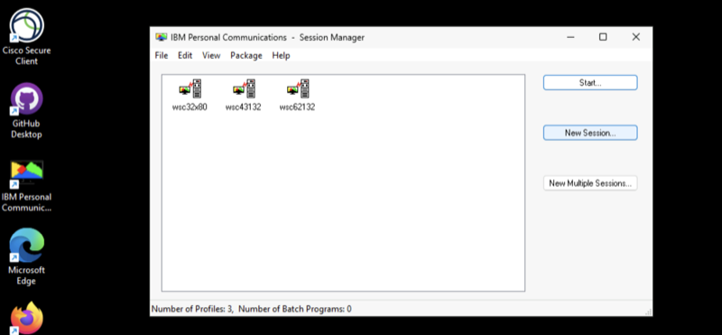
- Click on the Link Parameters button.
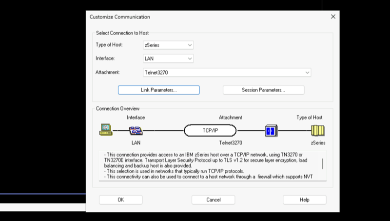
- Enter in your z/OS IP Address from your z/OS TechZone reservation details and Port Number
2023.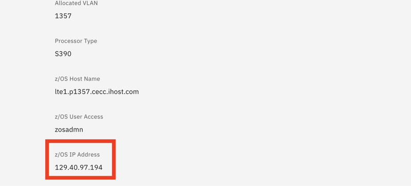
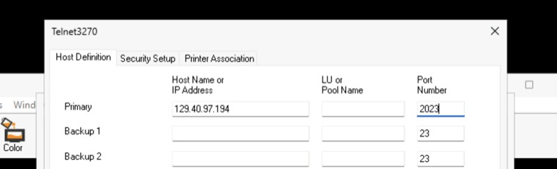
- Click the Apply button at the bottom.
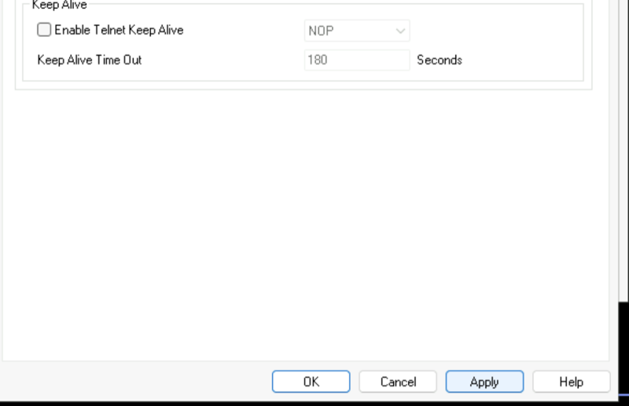
- Click the OK button at the bottom.
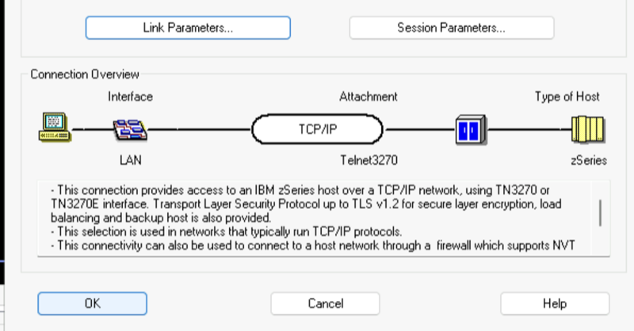
2.3 Login to TSO
Once connected, the TSO login screen will appear. Type the following and press Enter:
TSO ZOSADMN
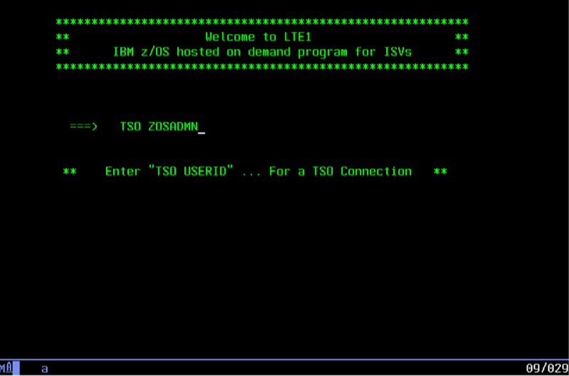
- Enter the z/OS User Password from TechZone's Reservation Details when prompted and hit Enter.
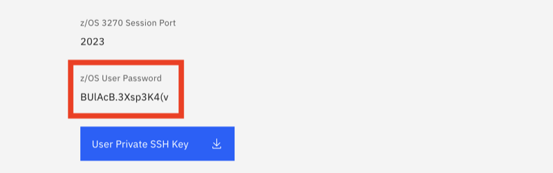
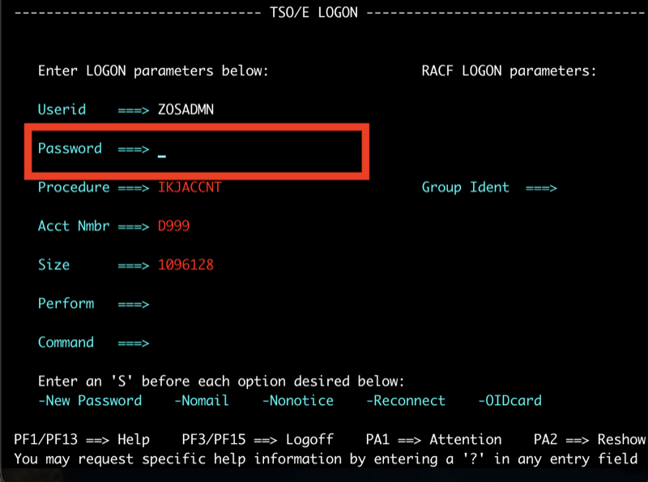
- Once you see the Ready prompt, type ISPF and hit Enter.
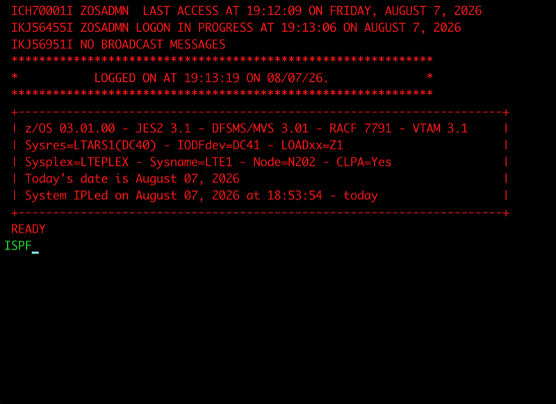
- You will then be presented with the ISPF Primary Option Menu.
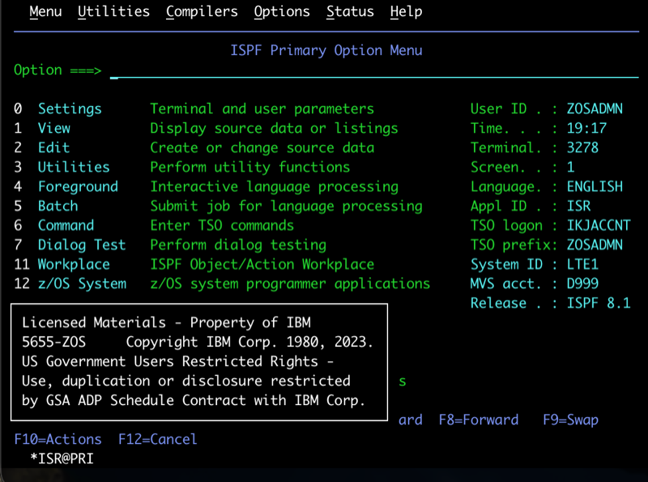
Troubleshooting
Cannot reach the z/OS IP from the jump server
- Confirm both the jump server and z/OS reservations are in
Readystate - Use the z/OS IP from the z/OS reservation details — not from the jump server details
Browser session disconnects
- The jump server session times out after a period of inactivity
- Re-open the environment from your TechZone reservation — session state is preserved as long as the reservation is active
What's Next?
- z/OS Navigation Reference — TSO/ISPF, USS commands, and dataset navigation
- Image Catalog — Browse available demo images